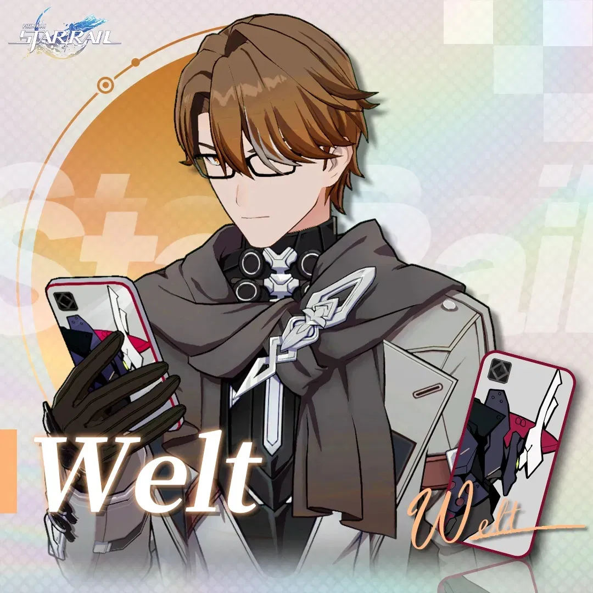
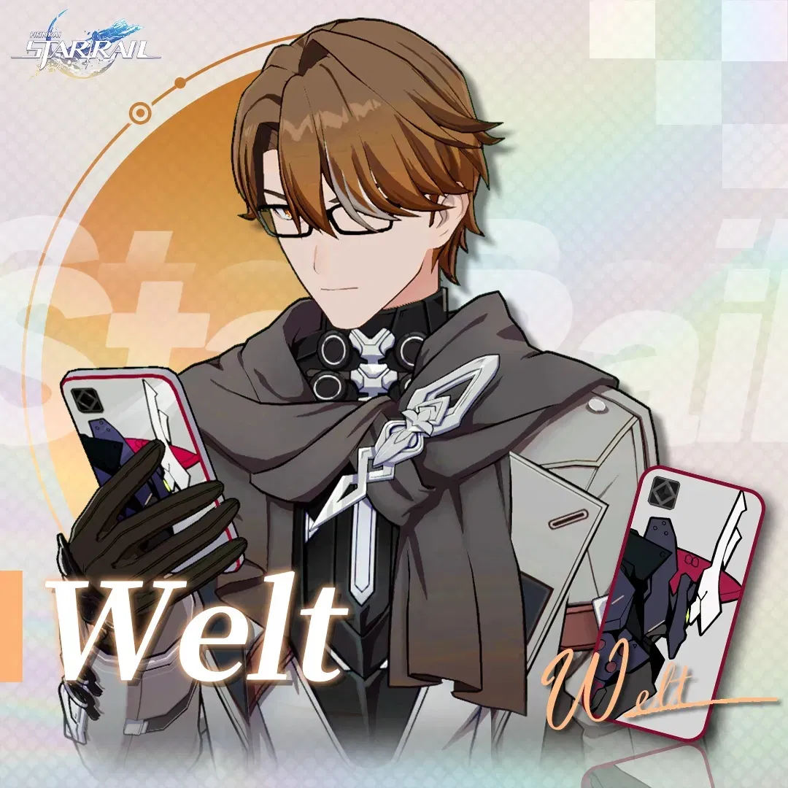
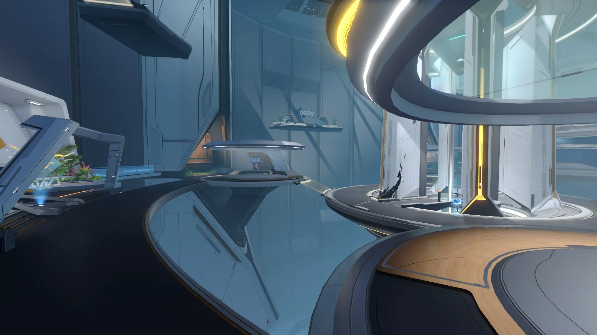
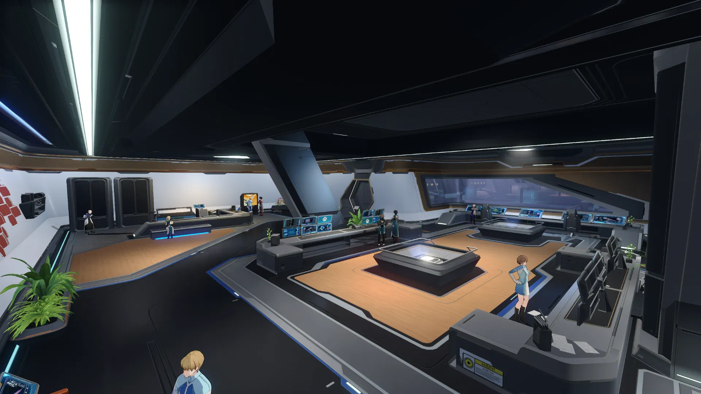
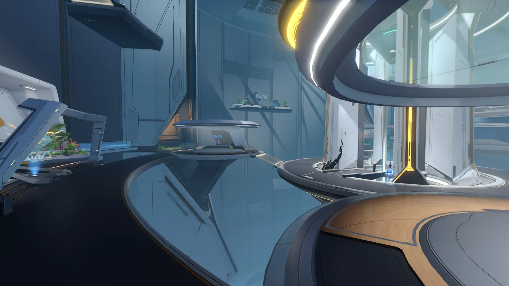
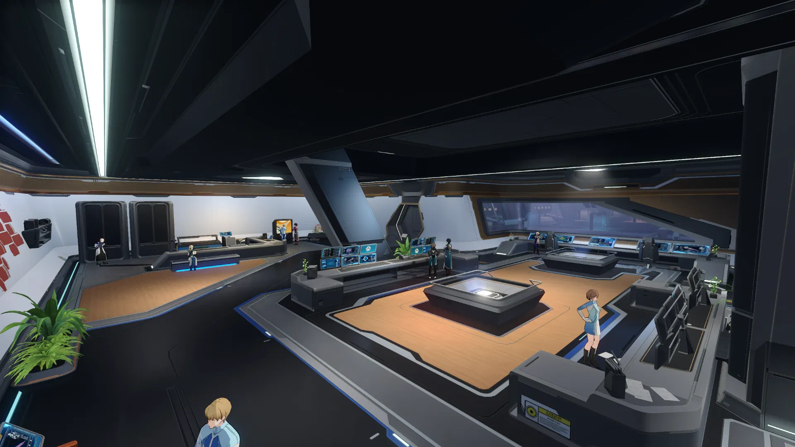
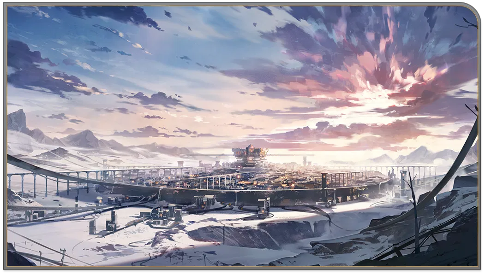
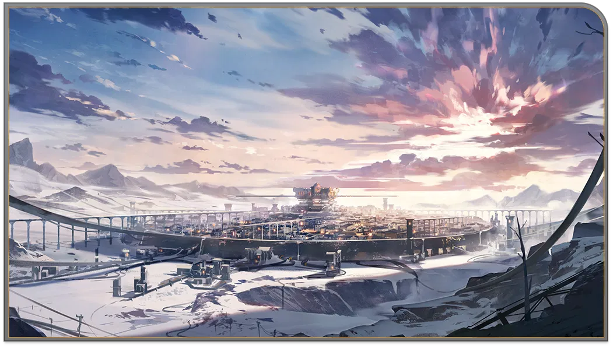

Character Details
An adventurous scientist who encountered the Astral Express as a young woman when it got stranded in her homeworld.
Years later, when Himeko finally repairs the Express and begins her journey into the stars, she realized that this is only the beginning. On her journey to trailblaze new worlds, she would need many more companions...
And while they may have different destinations, they all gaze at the same starry sky.
Character Story: Part I
The girl is lost.
She can't remember when she became lost. She just walked and walked, on and on into the dark night, chasing the sun and the moon, over and over again — until she falls.
She remembers what she looked like as a college freshman, remembers her chosen major — interstellar travel dynamics — and now she's lying face down in the mud.
She looks up to the stars, and just then sees meteors streaming down: one, two, three... And then more, smaller ones, flickering and flashing ever so finely before a magnificent blaze tore open the night.
Her limbs drag her forward, leading her on to where the land meets the ocean. At the shoreline, the waters jostle against her like how the tide treats that stranded Express, alone and lost.
She walks in and see the scenery outside beginning to change. The Express shows her a myriad of magnificent worlds. They are faraway, beyond her homeworld, yet also close enough to be a simple train ride.
She tries to repair the Express. It starts up only briefly, but it is enough to skid across the sky of her home. She immediate sees the path home. From that altitude, the journey is so short, and even the ocean of her homeworld appears so insignificant.
It asked her whether she'd like to travel together. She wonders what kind of journey that would be.
"A journey to the beginning."
"Let's go then." Without hesitation, the girl replied, "Just as you brought me home, so would I take you home, too."
Character Story: Part II
This suitcase is her treasure trove. Previously, she'd filled it with all kinds of train repair tools to fix up the Express. But now, it's packed with a molecular saw, an escaped satellite, and countless other contraptions — the embodiment of her whims and the proof of her resolute will.
No travel companion is more faithful to her than this suitcase. Passengers come and go on the Express, and perhaps not even "the conductor" would be able to accompany her and the Express from start to finish.
But she doesn't care. She didn't care when that pretentious blond man left without saying goodbye, just like how she didn't care about her distant homeworld and old friends.
She knows that this journey is lonely. Even if she could get to know like-minded travel companions, even if they showed her generous grace, even if she could witness the end of a complete journey with those companions — that's all just a momentary fluke.
She knows that this journey is lonely. Nobody can follow in the exact same footsteps as anyone else. Nobody can experience for someone else everything that happens along a journey. All she can rely on are her own two eyes and feet.
That's why she stores inside her suitcase all the sights her eyes have witnessed, and all the footprints her feet have left behind.
Character Story: Part III
Himeko's memory is very good.
The longer the journey gets, the more travel companions she accrues. She can still remember many of them.
She remembers her awkward chit-chats with Pom-Pom, and how the first two passengers aboard the Express were Welt and his blond friend. She remembers how the taciturn Dan Heng defeated the monsters that can swallow stars with just one strike of his lance. She remembers how March 7th had awoken from her icy slumber, all the outfits she'd designed for March, and what March loves the most. She remembers how the Crew arrived at Herta Space Station, how she met Trailblazer, and how they'd embarked on a new journey once more.
She remembers the specifications for every single component of the Express and how they're assembled. She remembers when to oil the Express's bearings and when each plant on the Express needs watering. She remembers Pom-Pom's non-negotiable bottom line, and that Welt has rather juvenile hobbies. She remembers that Dan Heng is always pulling all-nighters to organize the data bank, and how March 7th loves to sleep in. She remembers the personality, habits, hobbies, birthdays, and other anniversary days of everyone aboard the Express. And she remembers much, much more.
The greatest pleasure for Himeko is that everyone can safely reach their destination on the Express.
"Traveling always has an end point. When it happens, I'll smile and say goodbye to everyone."
She always says that, and she'll definitely remember to do that.
It's memory that has formed the road she came from, and memory that will eventually return her to the seas from whence she came.
Character Story: Part IV
"What a long journey." She says.
"I've been waiting for so, so long."████ looks at her: "It wasn't bad luck that has led you down this path, but wanderlust and curiosity."
"Of course," she smiles, "But I've experienced far less than what you've been through."
"No, I've never experienced the things you have." ████ shakes their head: "There are as many routes as there are pairs of feet."
"Right now, we may be standing in the same place, but we harbor different thoughts and views."
Together, they look up to the stars in silence, and just then saw meteors streaming down: one, two, three... And then more, smaller ones, flickering and flashing ever so finely before a magnificent blaze tore open the night.
A quiet voice disturbs the still air once more: "What do you see?"
"The stars have finished their journey." She says.
████ laughs: "I, instead, see that their journey is only just beginning."
They do not speak again.
"Let's go back. They're waiting for me."
████ is silent, then asks: "Has the journey so far made you happy?"
She picks up her suitcase and walks back in the direction of the Express without looking back.
"Same as always."


 



 





 
